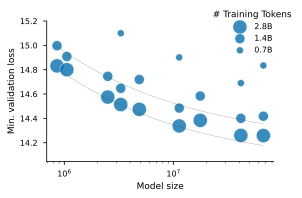
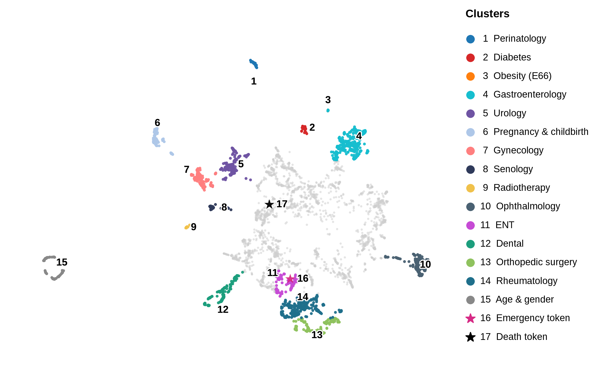
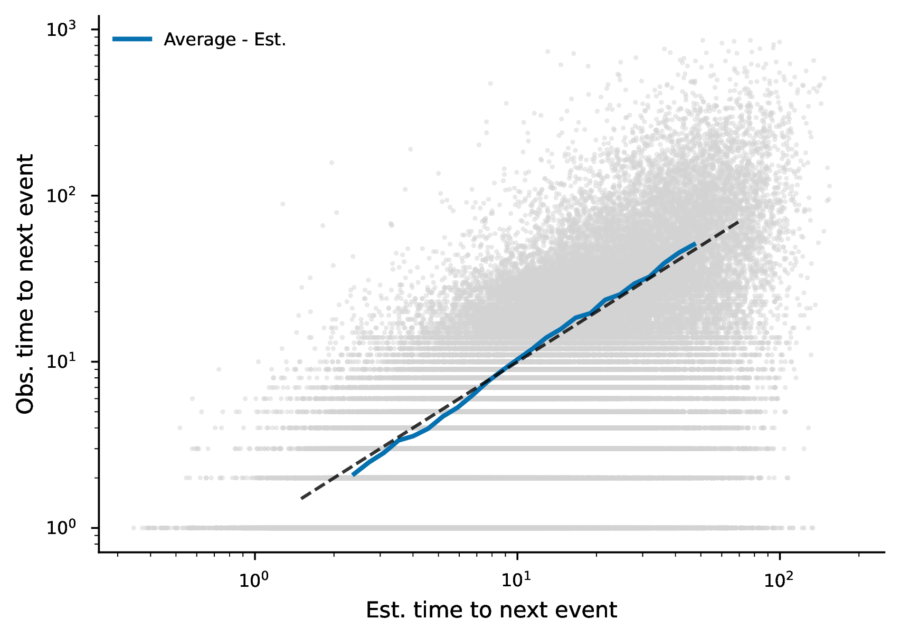
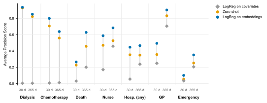
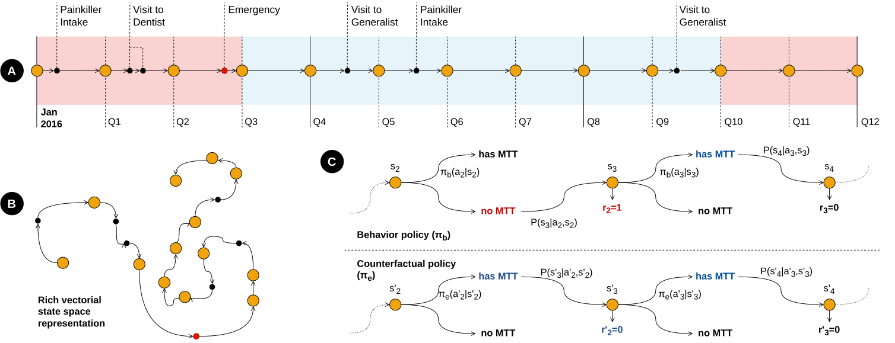
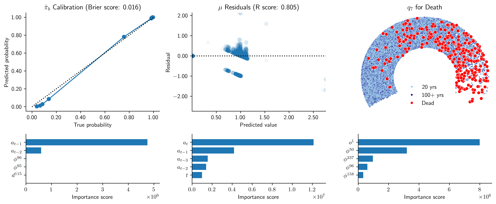
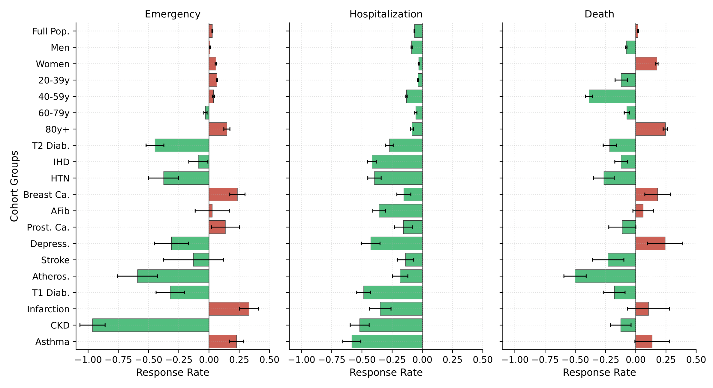
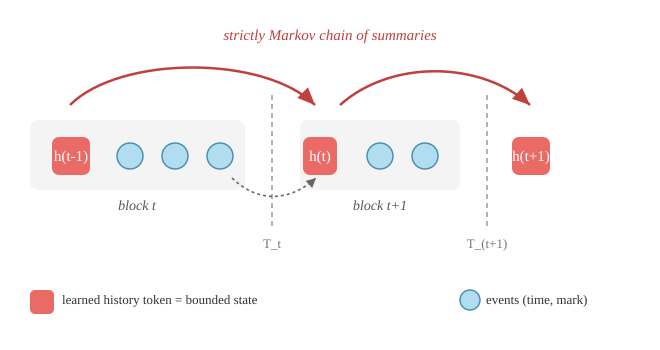

Policy evaluation using Transformer-based medical pathway embeddings
24 September 2026
Dataset of medical pathways: For i = 1, \dots, n, X_i \coloneqq (e_i, t_i, f_i), where:
These pathways are:
To feed downstream estimators, we need to represent those pathways as vectors (embeddings)
\text{logits}_{i, c, v} = (W \cdot GPT_{\theta}(X))_{i, c, v}
\text{BCE}_{i, c} \coloneqq - \sum_v y_{i, c, v} \log \frac{\lambda_{i, c, v}}{1 + \lambda_{i, c, v}} + (1-y_{i, c, v}) \log \frac{1}{1 + \lambda_{i, c, v}}
\text{TTE}_{i, c} \coloneqq - \log(\sum_v \lambda_{i, c, v}) + t^{*} \sum_v \lambda_{i, c, v}


Scaling laws showing the power-law decay (dashed) of validation loss as a function of model parameters and data volume.
We are matching the ~2,000 optimal ratio \frac{\text{\# training tokens}}{\text{\# parameters}} found in Waxler et al. (2025).

Spatial proximity reflects co-occurrence patterns learned during training on raw medical trajectories, without any explicit clinical labeling. The embedding space spontaneously organizes into interpretable clinical clusters, suggesting the model has learned a coherent representation of medical care.

Temporal calibration comparing expected versus observed days to the next medical token; the identity line (dashed) indicates high temporal precision.

APS across 7 clinical events at 30 and 365-day horizons (n = 100,000 held-out). Each individual’s embedding is sampled at a random time along their trajectory. Blue: logistic probes trained on a separate cohort of 100,000; orange: GPT zero-shot; grey: age/sex baseline.
A policy \pi: \mathcal{S} \to \Delta(\mathcal{A}) is a mapping from states to distributions over actions (\pi(a|s) is the probability of taking action a in state s under policy \pi).
A T-step trajectory \tau generated by policy \pi is a sequence of states, actions and rewards: \tau \coloneqq (s_0^i, a_0^i, r_0^i \dots s_{T-1}^i, a_{T-1}^i, r_{T-1}^i, s_T^i) where:
The return of a trajectory \tau is the discounted sum of rewards: G(\tau) = \sum_{t=0}^{T-1} \gamma^t r_t^i.
We are interested in the value of a policy \pi, defined as the expected return of trajectories generated by \pi: V^{\pi} = \mathbb{E}_{\tau \sim P^{\pi}}[G(\tau)] where P^{\pi}(\tau) is the distribution of trajectories generated by policy \pi.
\Pr\{s_{t+1}=s', r_{t+1}=r \mid s_t, a_t\} = \Pr\{s_{t+1}=s', r_{t+1}=r \mid s_t, a_t, r_t, s_{t-1}, a_{t-1}, \ldots, r_1, s_0, a_0\}
The future is conditionally independent of the past given the present state.

Reinforcement learning framework:
s_t = \left[ \phi_t^\top,\ \mathbf{m}_t^\top,\ \mathbf{d}_t^\top,\ \mathbf{o}^\top \right]^\top
Assumption: the state vector s_t satisfies the Markov property, making it a sufficient statistic of the patient’s trajectory up to time t, and enables to predict the next state and the next reward given the current state and action.
Goal: estimate the value V^{\pi_e} from data collected under \pi_b, without running \pi_e.
Two classical estimators, each with a flaw:
Doubly Robust (DR) (Kallus and Uehara 2020): combines both. Consistent if either nuisance is well-estimated.
Two nuisance components to estimate:
q_t(s,a) = \mathbb{E}_{\pi_e}\!\left[ \sum_{t'=t}^T r_{t'} \,\middle|\, s_t = s,\, a_t = a \right]
\mu_t(s,a) = \mathbb{E}_{\pi_e}\!\left[ \prod_{t'=0}^t \frac{\pi_e(a_{t'}|s_{t'})}{\pi_b(a_{t'}|s_{t'})} \,\middle|\, s_t = s,\, a_t = a \right]
Estimate \hat{\pi}_b as a binary classifier: features are the state s_t, target is whether the patient has a PCP.
Compute the product of importance weights along each trajectory: \prod_{t'=0}^t \frac{\pi_e(a_{t'}|s_{t'})}{\hat{\pi}_b(a_{t'}|s_{t'})}
Learn a single \hat{\mu} by regressing these products on features (t, s_t, a_t), avoiding one model per time step.
Train backwards from t = T down to t = 0.
At t = T: regress r_T on (s_T, a_T) to get \hat{q}_T.
At t < T: regress the pseudo-outcome r_t + \pi_e(0|s_{t+1})\,\hat{q}_{t+1}(s_{t+1}, 0) + \pi_e(1|s_{t+1})\,\hat{q}_{t+1}(s_{t+1}, 1) on (s_t, a_t) to get \hat{q}_t.
Loss: Poisson regression for counts (emergencies, hospitalizations), binary cross-entropy for death.
N \approx 50\text{M} individuals split into K = 100 folds (~500K each). One model pair (\hat{q}^k, \hat{\mu}^k) per fold.
For individual i in fold k, nuisances are evaluated using the out-of-fold median:
\hat{q}_t^{(-k)}(s,a) := \operatorname{median}\!\left(\{\hat{q}_t^j(s,a)\}_{j \neq k}\right)
Median over K-1 models rather than mean: robust to outlier predictions (Chernozhukov et al. 2018).
GPT embeddings follow the same split-sample logic.
For each individual i, the influence function \psi_i is:
\psi_i = \sum_{t=0}^T \hat{\mu}_t^{(-k)}(s_t^i, a_t^i)\bigl[r_t^i - \hat{q}_t^{(-k)}(s_t^i, a_t^i)\bigr] + \hat{\mu}_{t-1}^{(-k)}\!\left[\sum_{a}\hat{q}_t^{(-k)}(s_t^i, a)\,\pi_e(a|s_t^i)\right]
with \hat{\mu}_{-1}^{(-k)} \equiv 1.
The policy value estimate is \hat{\rho}_{\pi_e} = \frac{1}{N}\sum_i \psi_i, with standard error \hat{\sigma}/\sqrt{N}.
Valid inference comes directly from the sample variance of the \psi_i: no bootstrap needed.
Validation of nuisance parameters:

Out-of-fold diagnostics for the three nuisance functions. Left: \hat{\pi}_b calibration and \hat{\mu} residuals confirm reliable trajectory re-weighting. Top-right: rank-ordered \hat{q}_7 estimates — observed deaths (red) concentrate at the highest predicted-risk deciles, confirming mortality discrimination. Bottom: feature importance shows GPT history embeddings (\phi_t) are the primary predictors, secondary only to biological sex (\mathbf{o}^1).
OPE estimates:

Doubly-robust OPE estimates of the G4H intervention effect across cohort subgroups and three outcomes (Emergency, Hospitalization, Death). Bars show the estimated response rate (95 % CI); green = beneficial reduction, red = adverse increase.
The problem (why).
The whole OPE pipeline rests on one assumption: the state s_t (built from the GPT history embedding \phi_t) is Markov, i.e. a sufficient statistic of the trajectory so far.
But an unconstrained causal Transformer has no bounded Markov state. Its representation at position t is a function of the entire past, diffused across a growing residual stream.
\phi_t is just a lossy read of that stream: nothing forces “the future is conditionally independent of the past given \phi_t”.
We want a fixed-size running summary h_t that is a genuine sufficient statistic, exactly what an OPE estimator (or any RL value function) needs.
The method (what).
MarBLE wraps our decoder-only GPT with a bounded history token h_t, refreshed at chosen boundaries (a quarter, a hospital admission).

Block-recurrent structure: events feed into a per-block summary h_t, and h_{t-1} is the only path from the past into block t.
Two components, each targeting a precise sense of sufficiency:
Block-diagonal Markov mask gives predictive sufficiency: the future is conditionally independent of the past given h_t. The chain is Markov by construction.
Discounted backward reconstruction (DBR) loss gives retrospective sufficiency: h_t is a decodable, recency-weighted record of the events it summarized.
Insert learned history tokens at boundaries: block t is B_t = (h_{t-1}, e_{t,1}, \dots, e_{t,k_t}), with recurrence h_t = \mathrm{LayerNorm}(W z_{t,k_t} + b).
Block-diagonal causal mask: no event in block t may attend before h_{t-1}. So h_{t-1} is the sole gateway from the past, making h_0 \to h_1 \to \cdots strictly Markov (distribution-free, no change to the attention operator).
Forward loss: the same TPP likelihood as our GPT (multi-label BCE + time-to-event). Under realizability, its minimizer makes h_t predictively sufficient.
DBR loss: a backward decoder reconstructs each block’s recency-discounted per-mark intensity, with an exact, zero-variance closed form: \mathcal{L}^{(t)}_{\text{back}} = \sum_{v} r_v\, E(\Delta T) - \sum_{v} \tilde{c}_v \log r_v, \qquad \tilde{c}_v = \sum_{j:\,y_j=v} e^{-\beta u_j} where u_j is the backward age of event j and \beta sets the memory horizon.
Training: parallel within blocks, a short recurrent scan across them. Inference is streaming: constant memory and per-event compute in the history length.
Backbone-agnostic: the mask and DBR attach to any decoder-only model.
The problem (why).
The fix (what): discrete-time competing risks (DCR).
A record is a day-indexed sequence of sets \mathcal{E}_d; we score each day with Bernoulli hazards h_{v,d}: \ell_{\mathrm{DCR}} = -\sum_{d} \Big[ \sum_{v \in \mathcal{E}_d} \log h_{v,d} + \sum_{v \notin \mathcal{E}_d} \log (1 - h_{v,d}) \Big]
The problem (why).
UNK, fixed-level rollup) are unchecked statistical choices.The answer (what).